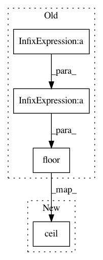

0de179b2ea433e9c33884917b7da44ea10561cbc,nussl/spectral_utils.py,,_add_zero_padding,#Any#Any#Any#,394
Before Change
if overlap >= hop_length:
overlap_hop_ratio = np.ceil(overlap / float(hop_length))
num_blocks = np.ceil(original_signal_length / float(hop_length))
before = int(overlap_hop_ratio * hop_length)
after = int((num_blocks * hop_length + overlap) - original_signal_length)
signal = np.pad(signal, (before, after), "constant", constant_values = (0, 0))
num_blocks = int(np.floor((len(signal) - overlap) / float(hop_length)))
elif overlap<hop_length:
num_blocks = np.ceil(original_signal_length / float(hop_length))
After Change
original_signal_length = len(signal)
overlap = window_length - hop_length
num_blocks = np.ceil(len(signal) / hop_length)
if overlap >= hop_length: // Hop is less than 50% of window length
overlap_hop_ratio = np.ceil(overlap / hop_length)
In pattern: SUPERPATTERN
Frequency: 3
Non-data size: 4
Instances
Project Name: interactiveaudiolab/nussl
Commit Name: 0de179b2ea433e9c33884917b7da44ea10561cbc
Time: 2017-02-04
Author: ethanmanilow@gmail.com
File Name: nussl/spectral_utils.py
Class Name:
Method Name: _add_zero_padding
Project Name: galeone/dynamic-training-bench
Commit Name: 90e9ca8963ed6685506a716c31b5888fad696437
Time: 2016-10-25
Author: nessuno@nerdz.eu
File Name: train_decaying_keep_prob.py
Class Name:
Method Name: keep_prob_decay
Project Name: p2irc/deepplantphenomics
Commit Name: d7d675fe02a0128032fec75f5af651c4a076823b
Time: 2019-07-08
Author: dbl599@mail.usask.ca
File Name: deepplantphenomics/layers.py
Class Name: poolingLayer
Method Name: __init__